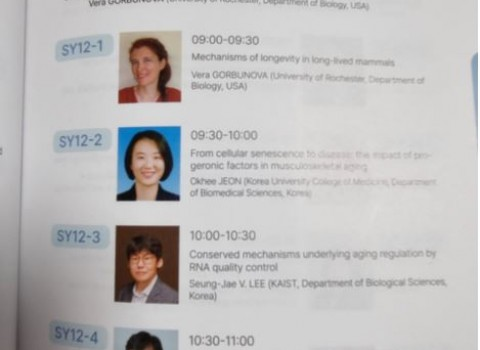
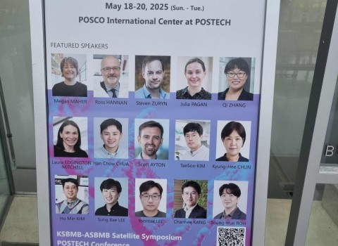
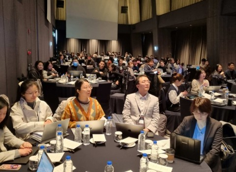
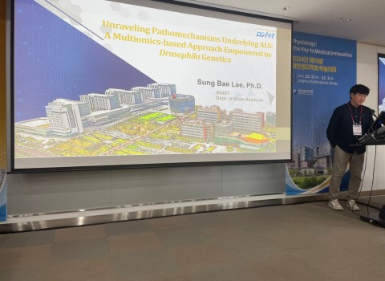
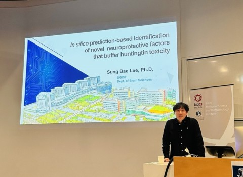
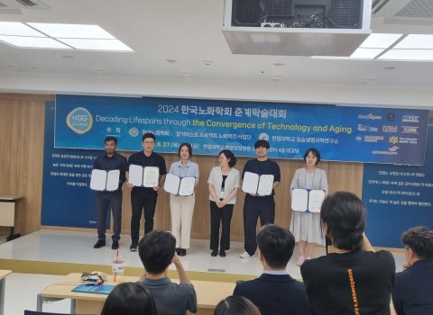
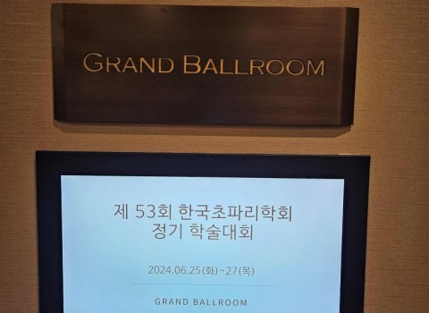
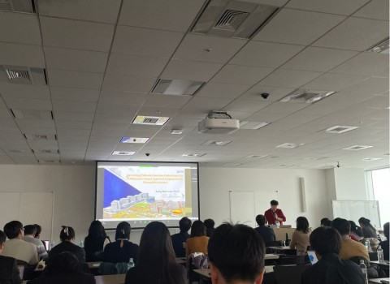
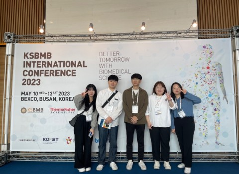

Conference
Invited talk @ FAOBMB 2025
May 21–23, 2025 · BEXCO

Conference
FAOBMB Korea–Australia Special Symposium
International scientific exchange and invited presentation

Conference
A3 Foresight Program in Daejeon
March 7–9, 2025 · Student presentation by Min Gu Jo

Conference
KPS 2024 invited talk
October 31, 2024 · Korea University

Conference
Australian–Korean Joint Symposium
Invited joint symposium talk

SB Lab News
Dr. Jaeho Cho wins Best Presentation Award
Korean Society for Biology of Aging

Conference
Korean Drosophila Society Meeting
June 25–27, 2024

Research Training
A3 Foresight Program in Osaka
January 10–12, 2024

Conference
2023 KSBMB at BEXCO, Busan
May 10–13, 2023